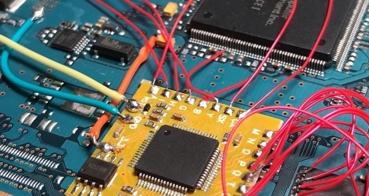

Intro
As a senior engineer with broad experience in firmware, software, and web development, I'm open to new opportunities. I'm especially interested in working for a company with a positive and altruistic mission.
I live in Minnesota, and am passionate about my community and all types of technology. I serve as the president of my HOA and as Technology Advisor of the Hopkins Business & Civic Association. Check out some of my projects here!
I also own a small company that serves to bring other small companies onto the Internet. Check out Zink Solutions!
Work

Medtronic
(Senior Software Engineer, May 2020 - Present)
- Mentor lower level engineers and interns
- Oversee scheduled software releases using CI/CD
- Implement features for pacemaker interrogation software (proprietary language)
- Manage a small team to create an internal automation tool
(Firmware Engineer, August 2019 - May 2020)
- Wrote and reviewed firmware tests for Pain RC (TCL) and Pump X (C++) using proprietary libraries
- Designed verification tests for THOR recharge module (Python) with automated testing in Jenkins
Wells Fargo
(BSC & Web Designer, July 2017 - August 2019)
- Managed communication and whitepapers for the Retail Delivery Systems team
- Built and oversaw brokerage of VDIs (virtual desktops)
- Single-handedly developed the new system of maintenance for the VDIs and trained another team to use it for future changes
- Organized users and managed priviledges to test/dev/prod servers
- Provided technical support for those experiencing issues on the VDIs or any other computer-based problem
Punch Through Design
(Software/Firmware/Web Developer, May 2016 - July 2017)
- popSLATE 2 firmware(written in C, tested in Python, used various debugging hardware)
- Wrote tutorials, guides, and projects for the LightBlue Bean (Arduino and BLE profiles)
- Augmented company website to fix bugs and increase views/sales (Github, Heroku, AWS)
- Improved shipping fulfillment process (Shopify API, Liquid)
Innovative Tech. Partners
(IT Support, Oct 2010 - May 2016)
- Built and maintained PCs, laptops, servers, NAS units, switches, routers, modems, VoIP systems, and more
- Worked directly with end-users to solve technical problems and upgrade hardware and software
- Managed IT infrastructure with GFI Max IT monitoring and support tools
- Provided remote support using TeamViewer for Windows and Mac
Bruegger's Bagels
(Bagel Baker & Sandwich Maker, July 2013 - July 2014)
- Worked with difficult customers to craft precise stacks of ingredients
- Prepared raw ingredients for the following day and documented stock
- Put raw dough in oven and used powerful alchemical skills to turn it into cooked bagels
Projects

- Fnid, a Chrome finder plugin that accounts for spelling errors (Winter Wonderhack 2016).
- MacBot, a conversational AI with API integrations to Slack, Facebook Messenger, and Weather Underground (Spartahack 2017).
- CoffeeBot, a coffee maker with SMS capabilities (was featured in newsletter as Instructable of the week).
- Pumpkin Notifire a wireless, ANCS-connected, fire-breathing jack-o-lantern.
- Budget Raspberry Pi arcade cabinet (customized RetroPie distro, cabinet made of recycled wooden pallet boards).
- Shoetooth Fight Stick, a retro arcade-style controller built into a shoebox that communicates with HID over Bluetooth Low-Energy.
- Fakey Makey, a dirt-cheap version of the Makey Makey made with an Arduino UNO clone and resistors.
- QWOP Bot, an AI that uses a genetic algorithm and improved heuristics to learn to run, using QWOP for reference.
- Spit It Out! - a card game adapted for mobile (Android) devices
- Light Pollution, a game made for the ICDBWTMAG 2019 Game Jam.
- Super Cruncher, an homage to MECC's 1990 masterpiece "Number Munchers."
- Arduino leak detector for large appliances
- CDAL-C++ cross compiler
- Various soldering side-projects
- Check my GitHub for projects I may never finish
- Check my Instagram for my woodworking projects
Contact
Think I'd be a good fit at your company?
Want to know more?
Connect with me on LinkedIn!